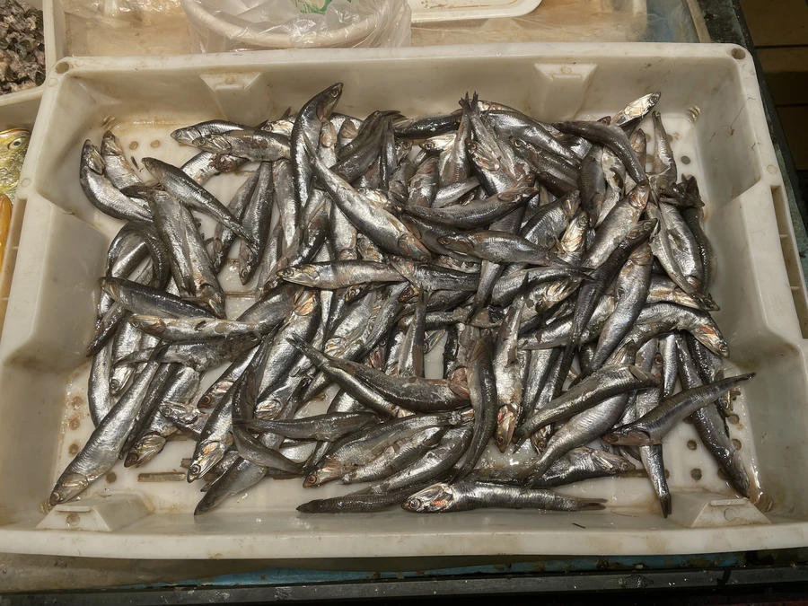

鱼类 · 动物界
鳀鱼 Engraulis japonicus

西北太平洋数量极大的小型上层鱼，以浮游生物为食，是重要的渔业资源和鱼粉原料，也是很多大型鱼类的饵料。
- 分类
- 门脊索动物门纲硬骨鱼纲目鲱形目科鳀科属鳀属
- 栖息环境
- 西北太平洋近海的上层水体，春季洄游到近岸产卵
- 地理分布
- 西北太平洋，从日本、朝鲜半岛到中国黄海、东海和南海北部
- 保护级别
- 暂无评估；中国未列入国家重点保护野生动物名录（重要渔业资源）
物种志
鳀鱼体呈细长形、稍侧扁，头大，吻突出，口裂大。体色背部青灰或蓝绿，体侧银白，体侧有一条银白色的纵带，死后容易脱落。成鱼体长一般 10–15 cm，最大约 20 cm，体重 10–30 g，是体型很小的上层鱼类。
鳀鱼分布于西北太平洋，从日本、朝鲜半岛到中国黄海、东海和南海北部，是中国近海数量最多的中上层鱼类之一。它主食浮游甲壳类，尤其是桡足类，靠细密的鳃耙滤食；春季洄游到近岸产卵，卵为浮性。鳀鱼数量大、繁殖快，是蓝点马鲛、带鱼、金枪鱼和海鸟等的重要饵料，也是鱼粉、鱼油和罐头工业的重要原料。由于它在海洋食物链中处于中间位置，其资源量变化会影响到上层捕食者；过度捕捞和海温变化都会造成其种群波动。目前它没有IUCN 的正式评估，中国未将其列入国家重点保护野生动物名录。
形态与习性
- 食性滤食桡足类等浮游甲壳类
- 体长一般 10–15 cm，最大约 20 cm
- 体重通常 10–30 g
- 繁殖春季洄游到近岸产卵，卵为浮性
- 生态作用大型鱼类和海鸟的重要饵料
- 渔业价值鱼粉、鱼油和罐头工业的重要原料
趣味知识
- 鳀鱼是西北太平洋数量最多的小型鱼之一，也是鱼粉工业的重要原料。
- 它体侧的银白色纵带在死后容易脱落，这是鳀鱼的典型特征。
- 鳀鱼群是大型鱼类和海鸟的“粮仓”，在海洋生态系统中地位重要。